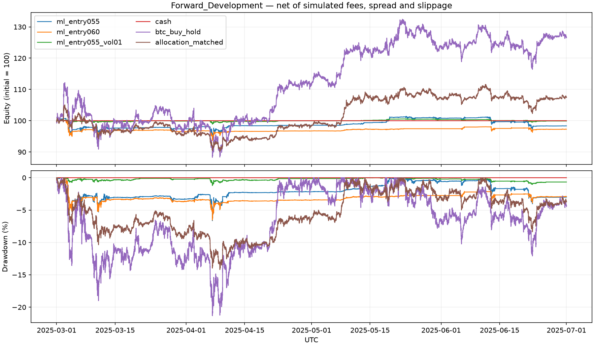

Historical backtest report
Test access: HELD OUT. Returns include simulated costs; historical results do not predict future performance.
Forward_Development: 2025-03-01 to 2025-07-01 (end exclusive, UTC)
| Portfolio | Composite | Net return | Max drawdown | Sharpe | Sortino | Calmar | Turnover | Fees ($) | Trades |
|---|
| ml_entry055 | -0.652 | -1.66% | 6.64% | -0.560 | -0.659 | -0.734 | 11.441 | 1,131.022 | 567 |
|---|
| ml_entry060 | -1.200 | -2.72% | 6.54% | -1.144 | -1.234 | -1.211 | 6.774 | 657.627 | 330 |
|---|
| ml_entry055_vol01 | -0.181 | -0.09% | 1.21% | -0.141 | -0.176 | -0.228 | 2.321 | 232.134 | 118 |
|---|
| cash | N/A | 0.00% | 0.00% | N/A | N/A | N/A | 0.000 | 0.000 | 0 |
|---|
| btc_buy_hold | 3.010 | 26.49% | 21.32% | 1.674 | 2.682 | 4.784 | 2.014 | 226.520 | 2 |
|---|
| allocation_matched | 1.391 | 7.42% | 14.19% | 0.970 | 1.488 | 1.683 | 0.860 | 87.429 | 4 |
|---|
Forward_Development curves

Assumptions and limitations
- Composite score is 0.4 Sortino + 0.3 Sharpe + 0.3 Calmar using the documented research definitions, without normalization. It is undefined if any component is undefined; this is not a verified reproduction of organizer calculations.
- Completed bar closes feed the configured strategy; signals execute at the next bar open. Sizing uses only that open and current holdings, never that bar's high/low/close.
- Existing risk.plan handles sizing, free balance, reserve, spread, rounding, order caps and buy halts. At most one strategy order per bar; sells have priority as in the live engine.
- Each split starts with fresh cash and risk state. Validation/test may use only preceding historical closes for indicator warm-up, without trading before the split.
- Binance USDT prices are a proxy for Roostoo USD prices, assuming 1 USDT = 1 USD. Candle closes approximate the live bot's sampled ticker prices.
- Bid/ask are synthetic from a constant configured spread. Market orders fill at open plus spread and adverse configured slippage; fees apply to executed notional. No partial fills, depth, volume limits, network latency or API outages are modeled.
- All portfolios are liquidated at the last close minus spread/slippage with fees. These terminal accounting fills bypass per-order caps/precision and are separated from strategy-generated trades.
- Cash earns zero. BTC buy/hold invests 100% including its entry fee. Allocation-matched buy/hold uses the configured maximum BTC/ETH target weights initially, leaves the remainder in cash, and does not rebalance. Passive benchmarks bypass strategy limits and buy halts.
- Sharpe uses sample standard deviation of full UTC-day returns; Sortino uses root mean squared negative daily returns including zero downside on positive days. Both annualize with sqrt(365), zero risk-free rate and zero target return.
- Calmar is calendar-time CAGR divided by maximum recorded drawdown. Ratios with fewer than two full days, zero variance/downside, or zero drawdown are N/A rather than fabricated infinities. Annualization over short periods can be misleading.
- Maximum drawdown uses recorded bar-close equity and initial equity, including terminal costs. Intrabar losses may be larger. Buy-halt decisions check observed opens and closes, not intrabar highs/lows.
- Turnover is total absolute executed notional divided by mean recorded equity, including entry/exit costs and terminal sales; it is not half-turnover or annualized.
- Fixed chronological splits reduce leakage but do not establish statistical significance or profitability. Repeated validation selection can still overfit. Held-out data should be evaluated once after the strategy is frozen.
Full metrics: CSV. Reproducibility record: JSON.